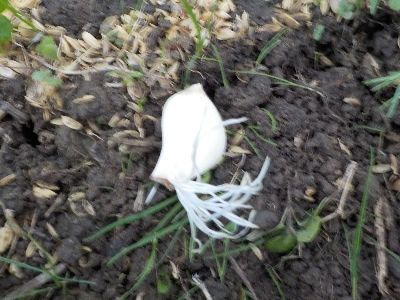
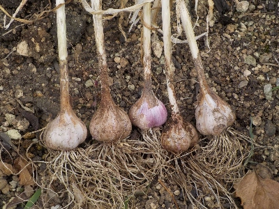
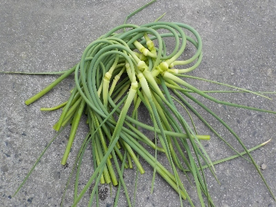
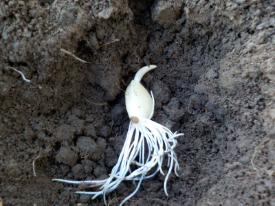
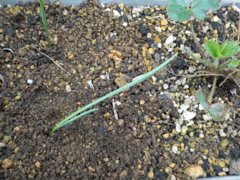
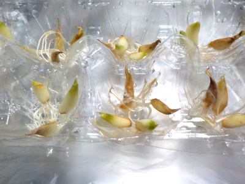
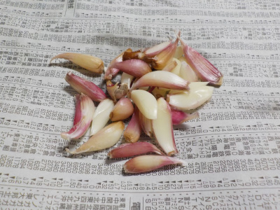

遊びで植物を育てよう
2024/10/27
冷蔵庫で根っこが出たニンニクを畑に植えました。

秋になってから植えれそうなサイズのニンニクは、食べないで冷蔵庫に貯めていました。
長い間冷蔵庫に入ってて、根っこが沢山出たものを畑に植えました。
畑が空いていないので、今回は大根が植えてある場所の隅っこに植えました。
大根は先に食べるので、ニンニクの邪魔にならないといいかな。
【ニンニクTOP】
【野菜TOP】
【園芸TOP】
2024/06/21
小さいニンニクを植えたら小さいニンニクが出来ました。

小さいニンニクでも早く植えれば大きくなるだろうと育てたニンニクです。
結果は大きく成りませんでした。これは小さすぎるので食べないな。
もう小さいニンニクは育てません。
【ニンニクTOP】
【野菜TOP】
【園芸TOP】
2024/05/05
ニンニクの芽を収穫しました。

芽が伸びたので収穫しました。
ニンニクの芽は収穫も簡単。洗うのも簡単。料理するのも簡単でいいですね。もっと量があるといいんだけどな。
【ニンニクTOP】
【野菜TOP】
【園芸TOP】
2023/10/22
根っこの出たニンニクを植えました。

涼しくなってきたので、冷蔵庫で保存していたニンニクを植えました。
冷蔵庫での保存中に沢山根っこが出てました。
根っこが出ている分、早く大きくなって欲しいです。
【ニンニクTOP】
【野菜TOP】
【園芸TOP】
2023/10/08
ニンニクを苺のプランターに植えました。

ニンニクはイチゴのコンパニオンプランツだそうなので、水耕栽培で育てた小さいニンニクをイチゴの側に植えました。
両方大きく育って欲しいです。
【ニンニクTOP】
【野菜TOP】
【園芸TOP】
2023/09/07
冷蔵庫のニンニクに根っこが出てたので水耕栽培にしました。

冷蔵庫で保存していたニンニクに根っこが出ていました。寒いと休眠すると思っていたんですが、そうじゃないんですね。
根っこ出たんなら育てようと思いましたが、暑い時期に植えると病気になっるってNET記事が多くあったので、畑に植えるのは止めました。
家の中で水耕栽培なら、病原菌がやって来ないかなと思いやってみました。
家の中で日が当たる場所は暑いですが、ちゃんと育つかな？
【ニンニクTOP】
【野菜TOP】
【園芸TOP】
2023/08/06
にんにくの味噌漬けを作りました。

家で収獲したニンニクで味噌漬けを作りましたが、あんまり小さいのは使えないかなと思い外しました。
これを育ててみようと思っています。
小さいニンニクでニンニク作ると、小さいニンニクが出来るそうです。大きいのと小さいのを一緒に育てたら、大きい方が成長が良く大きく育つのは普通だと思います。
植えるんなら大きい方がいいと思いますが、球根で増やす限り同じDNAなんですよね。そんなに違いはないんじゃないかなー。
小さいの植えてもいいんじゃないかなーと思いました。
今暑くて植える時期じゃないみたいなので、これは冷蔵庫に入れました。
【ニンニクTOP】
【野菜TOP】
【園芸TOP】
梅漬けや味噌漬けが好きです。
【おいしいものを食べよう。】【たくさん寝よう。】
【ソロ活をしよう!】【季節感のあることをしよう。】【動画視聴はほどほどに。】【当サイトの全てのコンテンツは無断転載禁止です。】